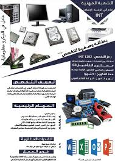

معلومات عامة عن التخصص
هذا التخصص يتبع لتخصصات الإعلام الآلي حسب تصنيف المدونة الوطنية لتخصصات التكوين المهني.
- الشعبة: إعلام آلي - الرقمنة - الإتصالات (INT).
- رمز التخصص: INT 1202.
- المستوى التأهيلي: 03.
- الشهادة المسلمة: شهادة التحكم المهني.
- مدة التكوين: 18 شهراً (منها شهر تطبيقي في مؤسسة عمومية أو خاصة).
- المستوى الدراسي المطلوب: الرابعة متوسط.
- نمط التكوين: حضوري (الإقامي) - التمهين.
بطاقة وصفية للتخصص

المهام الأساسية لعامل في الميكرو معلوماتية
تركيب وسائل المعلوماتية
تجهيز وتركيب الأجهزة والمعدات المعلوماتية بكفاءة عالية.
تحيين يومي لأنظمة المعلوماتية
ضمان تحديث الأنظمة والبرامج بشكل منتظم.
فحص ومعالجة الأعطاب
تشخيص وإصلاح الأعطاب من المستوى الأول.
فرص العمل
في كل قطاعات الإعلام الآلي العامة أو الخاصة.
مسار التطور التكويني
بعد الحصول على هذه الشهادة يمكنك:
- مواصلة التكوين لتصبح مستغل معلوماتية.
- التقدم لتصبح تقني سامي عبر المعابر المهنية.